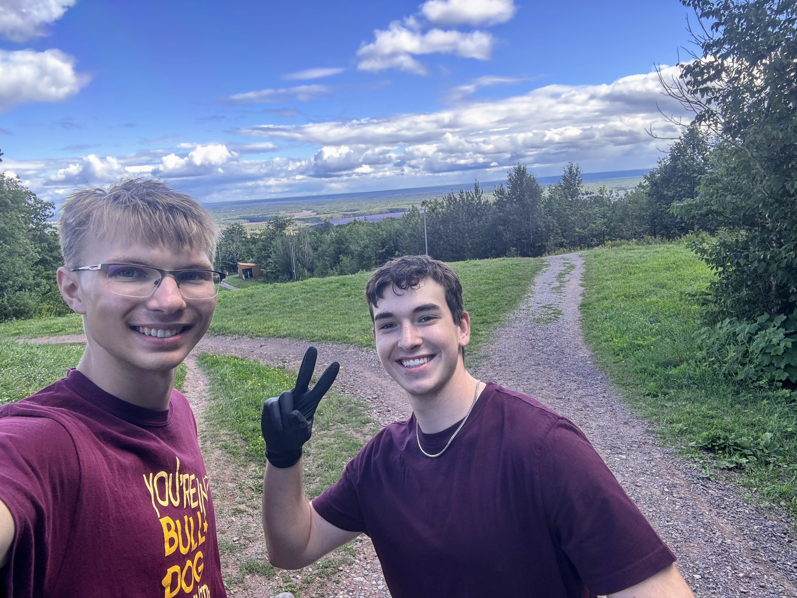

The University of Minnesota Duluth had a very welcoming and engaging environment on my first visit. The campus is both large and professional. It had the same standards and expectations as the Twin Cities campus but with a fraction of the students, making it a lot less crowded. The staff made it clear that UMD served their best interest in their students, ensuring we knew and had every resource available to us on day one.
The campus and Duluth itself are a very relaxing yet fulfilling city with beautiful surroundings. Superior Lake and the forest areas make it feel secluded while still full of adventure. Additionally, unlike other campuses, the Duluth campus has space for me to pursue my most prominent hobbies. It was one of the only campuses that I searched for that had a ski slope nearby, and the only one that offered students deals to the mountain. Additionally, the rec center and UMD offer opportunities in volleyball that matched my goals.
Tryouts for the UMD Men's Volleyball Club Team
Volunteer Work at Spirit Mountain